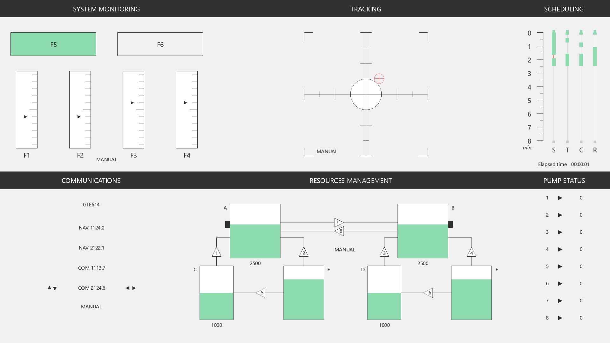
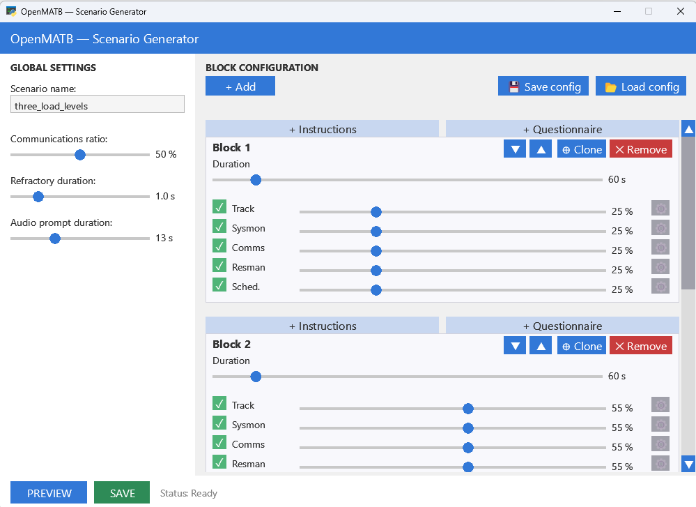
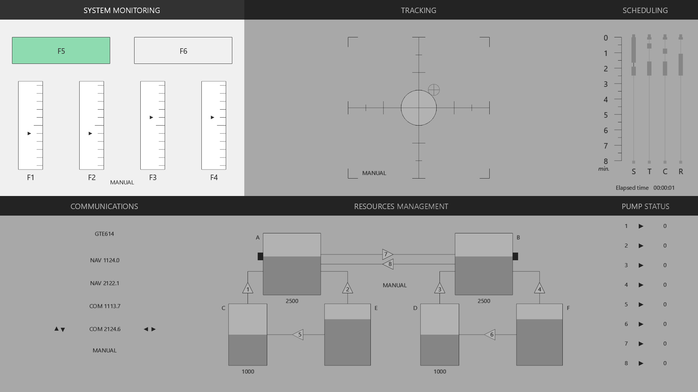
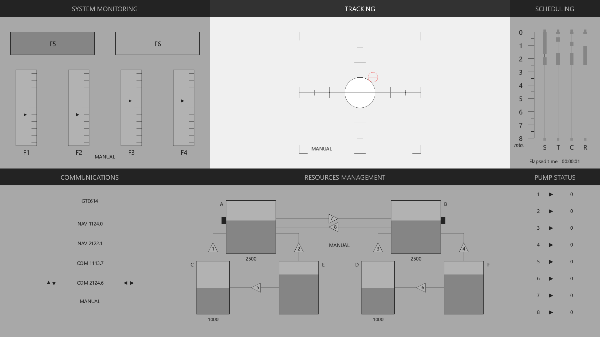
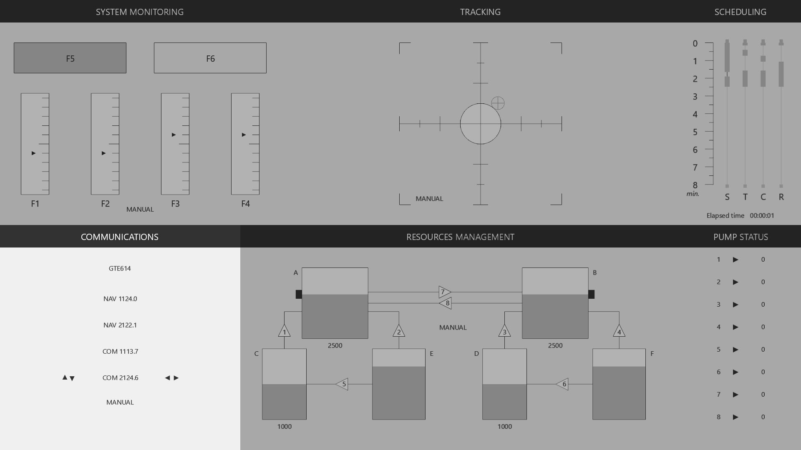
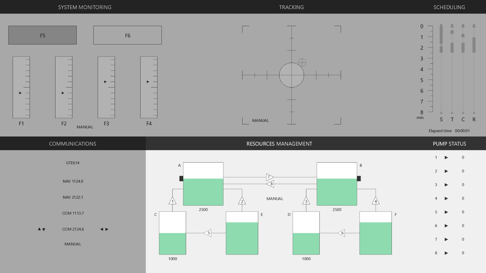
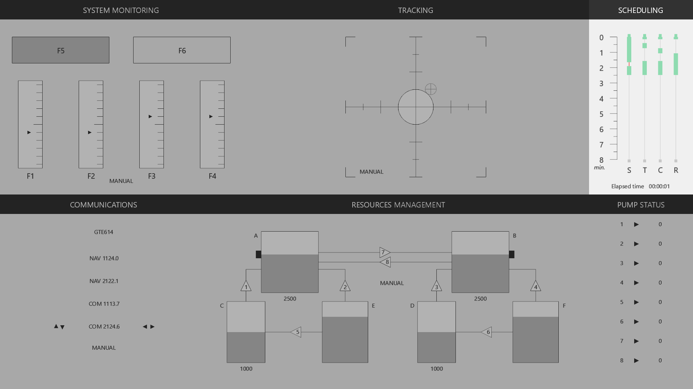
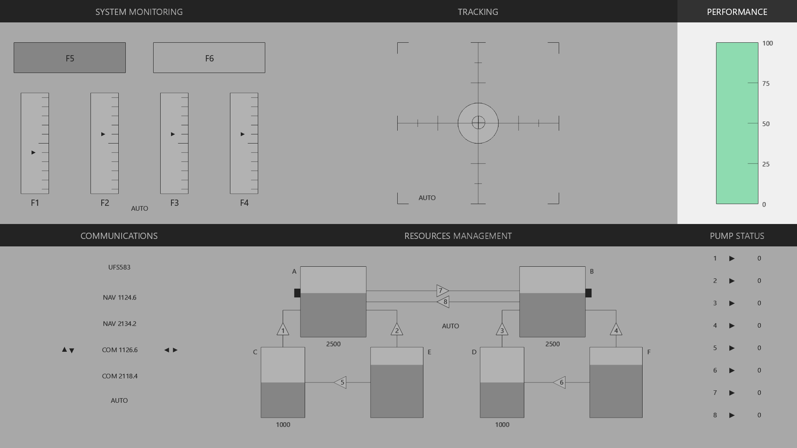
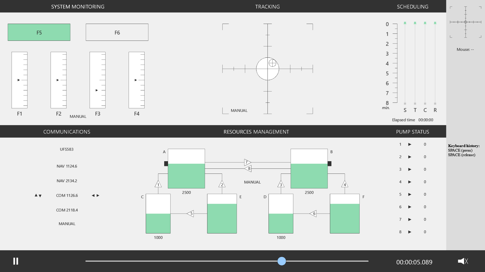

OpenMATB
Open Multi-Attribute Task Battery


An open-source reimplementation of the Multi-Attribute Task Battery (MATB), originally developed by NASA (Comstock & Arnegard, 1992). OpenMATB provides a set of concurrent interactive tasks representative of aircraft piloting, designed for human factors and cognitive workload research.
Cegarra, J., Valéry, B., Avril, E., Calmettes, C., & Navarro, J. (2020). OpenMATB: A Multi-Attribute Task Battery promoting task customization, software extensibility and experiment replicability. Behavior Research Methods, 52, 1980–1990. doi:10.3758/s13428-020-01364-w

OpenMATB running a full session with all five interactive components
Five Interactive Components
System Monitoring
Surveillance of gauges and detection of malfunctions via function keys
Tracking
Joystick compensation of a drifting cursor within a target zone
Communications
Audio-guided radio frequency tuning with callsign recognition
Resources Management
Pump and tank system balancing to maintain target levels
Scheduling
Chronological timeline of upcoming events and automation states
Design Objectives
Task Customization
Every aspect of the battery is configurable through plain-text scenario files — difficulty, timing, parameters, feedback, and automation levels.
Software Extensibility
Plugin architecture allows adding new tasks and measurement tools without modifying the core. Supports LSL, parallel port, and custom scales.
Experiment Replicability
Deterministic scenario scripts, comprehensive CSV logging, and session replay ensure that experiments can be shared and reproduced exactly.
Key Features
Scenario-Driven Design
Plain-text scripts define every event, parameter, and timing. No code changes needed to create new experimental conditions.
Neurophysiology Integration
Synchronize with EEG, fNIRS, and other recordings through Lab Streaming Layer (LSL) or parallel port triggers.
Session Replay
Replay any recorded session with full input visualization, seeking controls, and speed adjustment.
Cross-Platform
Runs on Windows, macOS, and Linux, and in the browser (experimental). Built with Python and pyglet — no heavy framework dependencies.
Prerequisites
3.9 or higher
pyglet, pyparallel, rstr, pylsl
Windows, macOS, Linux
PC + joystick (optional)
Quick Start
git clone https://github.com/juliencegarra/OpenMATB.git
cd OpenMATB
python -m pip install -r requirements.txt
python main.pyBuild a Scenario
Scenarios are plain-text scripts that orchestrate tasks, events, and parameters across an entire experimental session.
Scenario Tools
OpenMATB includes two scenario generation helpers:
scenario_generator.py— command-line scenario generator for progressive difficultyscenario_generator_ui.py— graphical interface for scenario creation

Scenario validation errors are written to last_scenario_errors.log in the root directory.
Syntax
Each line follows a three- or four-component format separated by semicolons:
time;plugin;command
time;plugin;parameter;value- Time —
H:mm:ssrelative to experiment start - Plugin — target module alias
- Command — action keyword or parameter path
- Value — parameter value (when setting a parameter)
Comments begin with # and are ignored by the parser. Commands are automatically sorted by execution time.
Available Plugins
| Plugin alias | Description |
|---|---|
sysmon | System Monitoring — gauge surveillance and failure detection |
track | Tracking — joystick cursor compensation |
scheduling | Scheduling — chronological timeline overview |
communications | Communications — radio frequency tuning from audio prompts |
resman | Resources Management — pump and tank balancing |
performance | Performance — real-time worst-of performance gauge |
instructions | Instructions — HTML instruction slides |
genericscales | Generic Scales — custom questionnaires (e.g. NASA-TLX) |
labstreaminglayer | Lab Streaming Layer — LSL marker streaming |
parallelport | Parallel Port — hardware trigger markers |
Actions
| Action | Description |
|---|---|
start | Initialize and display a plugin |
stop | Terminate a plugin |
pause | Suspend plugin activity |
resume | Resume after pause |
hide | Hide the plugin display |
show | Show the plugin display |
Parameter Hierarchy
Parameters use a dash-separated hierarchy to target nested elements:
0:00:10;sysmon;scales-1-failure;True
0:00:10;sysmon;alerttimeout;2000
0:00:00;resman;tank-b-target;1000
0:00:00;resman;pump-3-state;failureFor example, scales-1-failure targets the failure property of scale number 1 within the sysmon plugin.
Full Example — 1 Minute Scenario
# Scenario template
# 1. Task parameters
0:00:00;sysmon;feedbacks-positive-active;False
0:00:00;sysmon;feedbacks-negative-active;False
0:00:00;resman;tank-b-target;1000
0:00:00;track;cursorcolor;#009900
0:00:00;communications;callsignregex;[A-Z][A-Z]\d\d
0:00:00;communications;othercallsignnumber;5
0:00:00;communications;voicegender;male
0:00:00;communications;voiceidiom;french
# 2. Start tasks
0:00:00;resman;start
0:00:00;track;start
0:00:00;sysmon;start
0:00:00;scheduling;start
0:00:00;communications;start
# 3. Events
# 3.a. System monitoring
0:00:10;sysmon;scales-1-side;-1
0:00:10;sysmon;scales-1-failure;True
0:00:30;sysmon;scales-4-side;1
0:00:30;sysmon;scales-4-failure;True
# 3.b. Resources management
0:00:00;resman;automaticsolver;True
0:00:15;resman;pump-3-state;failure
0:00:25;resman;pump-3-state;off
0:00:25;resman;automaticsolver;False
0:00:30;resman;pump-7-state;failure
0:00:40;resman;pump-7-state;off
# 3.c. Tracking
0:00:20;track;automaticsolver;True
0:00:40;track;automaticsolver;False
# 3.d. Communications
0:00:00;communications;radioprompt;own
0:00:25;communications;radioprompt;other
0:00:40;communications;automaticsolver;True
0:00:45;communications;radioprompt;own
# 4. Stop tasks
0:01:00;resman;stop
0:01:00;track;stop
0:01:00;sysmon;stop
0:01:00;communications;stop
0:01:00;scheduling;stopPsychophysiology Measures
Synchronize OpenMATB events with neurophysiological recordings (EEG, fNIRS, ECG…) through two complementary methods.
Physiological Measures Used with OpenMATB
The following physiological measures have been recorded alongside OpenMATB in published studies. Each card lists the measure and the studies that employed it.
EEG (Electroencephalography)
Pontiggia et al., 2026; Zhou et al., 2025; Li et al., 2025; Novak et al., 2024; Liu et al., 2023; Farago et al., 2022
ECG / Heart Rate / HRV
Pontiggia et al., 2026; Konig et al., 2025; Sharma et al., 2025; Gossett et al., 2025; Duchevet et al., 2025; Wittels et al., 2025; Pontiggia et al., 2024b; Wittels et al., 2024; Orlov Savko et al., 2024; Liu et al., 2023; St. Onge et al., 2023; Konig et al., 2023; Konig et al., 2022
EDA / GSR (Electrodermal Activity)
Konig et al., 2025; Sharma et al., 2025; Gossett et al., 2025; Duchevet et al., 2025; Liu et al., 2023; Konig et al., 2023; Konig et al., 2022
Eye Tracking / Pupillometry
Pontiggia et al., 2026; Duchevet et al., 2025; Stasch et al., 2025; Wang et al., 2024; Novak et al., 2024; Pontiggia et al., 2024b; Orlov Savko et al., 2024; Liu et al., 2023; Avril et al., 2021a; Avril et al., 2021b
Respiration
Pontiggia et al., 2026; Sharma et al., 2025; Gossett et al., 2025; Wittels et al., 2025; Pontiggia et al., 2024b
SpO2 (Pulse Oximetry)
Wittels et al., 2025; Pontiggia et al., 2024b; Wittels et al., 2024; St. Onge et al., 2023
PPG (Photoplethysmography)
EOG (Electrooculography)
Skin Temperature
Core Body Temperature
Accelerometry
Konig et al., 2025; Gossett et al., 2025; Konig et al., 2023; Konig et al., 2022
For a comprehensive review of physiological measures used across 19 MATB studies (including EEG, ECG, EDA, respiration, eye tracking, EOG, fMRI, and skin temperature), see Pontiggia et al., 2024a.
Lab Streaming Layer (LSL)
Overview
The labstreaminglayer plugin uses pylsl to create a marker stream named "OpenMATB" of type "Markers". This stream can be captured by LabRecorder alongside your physiology streams for time-aligned multi-modal recording.
Parameters
| Parameter | Type | Description |
|---|---|---|
marker | string | Custom marker string pushed to the LSL outlet, then auto-reset to empty |
streamsession | boolean | When True, all log entries are also pushed as LSL samples |
pauseatstart | boolean | Pause and display a message until LabRecorder is connected |
Scenario Example
# Enable full session streaming via LSL
0:00:00;labstreaminglayer;streamsession;True
0:00:00;labstreaminglayer;pauseatstart;True
0:00:00;labstreaminglayer;start
# Send a custom marker at a specific time
0:05:00;labstreaminglayer;marker;BLOCK_2_STARTParallel Port
Overview
The parallelport plugin uses pyparallel to send hardware triggers (0–255) through the physical parallel port. Triggers are held for a configurable duration, then reset to 0. Queued triggers are sent sequentially.
Parameters
| Parameter | Type | Default | Description |
|---|---|---|---|
trigger | integer (0–255) | 0 | Trigger value to send on the parallel port |
delayms | integer (ms) | 5 | Duration the trigger is held before reset to 0 |
Scenario Example
# Start the parallel port plugin
0:00:00;parallelport;start
# Send trigger 10 at experiment start, trigger 20 at 5 minutes
0:00:00;parallelport;trigger;10
0:05:00;parallelport;trigger;20Integration Workflow
Events & logs
"OpenMATB" / Markers
+ physiology streams
Time-aligned data
Trigger commands
Hardware signal
Trigger input
Sub-ms precision
Compatible Software
- LabRecorder — records all LSL streams into a single .xdf file
- BrainVision Recorder/Analyzer — receives parallel port triggers natively
- OpenViBE — can read LSL streams for real-time BCI applications
- MNE-Python / EEGLAB — import .xdf files for offline analysis
Tasks
OpenMATB implements five interactive components.

System Monitoring
Participants monitor 4 analog scales (F1–F4) and 2 indicator lights (F5–F6). Failures deflect a scale or toggle a light’s state. The participant must press the corresponding function key within the alerttimeout window.
- Scales: arrow drifts to one side; F1–F4 to correct
- Lights: green light turns off or red light turns on; F5/F6 to correct
- Outcomes: HIT (correct key within timeout), MISS (timeout expires), FA (false alarm — key pressed without failure)
Key Parameters
| Parameter | Default | Description |
|---|---|---|
alerttimeout | 10000 | Max failure duration (ms) before MISS |
automaticsolver | False | Enable automatic failure resolution |
automaticsolverdelay | 1000 | Delay before auto-correction (ms) |
allowanykey | False | Any key resolves the first active failure |
feedbackduration | 1500 | Duration of visual feedback (ms) |
displayautomationstate | True | Show MANUAL/AUTO label |
scales-N-failure | False | Trigger failure on scale N (1–4) |
scales-N-side | 0 | Failure direction: -1 (down), 0 (random), 1 (up) |
lights-N-failure | False | Trigger failure on light N (1–2) |
Performance Metric
Average of the last 4 signal detections (hits/misses), mapped to 0–1.

Tracking
A cursor drifts according to a deterministic pseudo-random function. The participant uses a joystick to compensate, keeping the cursor inside a circular target zone.
- Cursor changes color when leaving the target (configurable)
- Target size adjustable via
targetproportion(0–1 fraction of the reticle radius) - Optional axis inversion for flight-stick compatibility
Key Parameters
| Parameter | Default | Description |
|---|---|---|
targetproportion | 0.25 | Target zone size (fraction of reticle radius) |
cursorcolor | black | Cursor color when inside target |
cursorcoloroutside | red | Cursor color when outside target |
joystickforce | 1 | Joystick sensitivity multiplier |
inverseaxis | False | Invert joystick direction (airplane mode) |
automaticsolver | False | Enable auto-compensation |
taskupdatetime | 20 | Update interval (ms) |
Performance Metrics
cursor_in_target — proportion of time the cursor is inside the target over the last 5 seconds. center_deviation — average distance from center.

Communications
Audio prompts instruct the participant to tune a radio to a target frequency. The participant must identify whether the prompt uses their callsign (respond) or a distractor (ignore).
- Navigation: ↑ ↓ to select radio (NAV1, NAV2, COM1, COM2)
- Tuning: ← → to adjust frequency by 0.1 MHz
- Validation: Enter to confirm
- Callsigns auto-generated from a configurable regex pattern
Key Parameters
| Parameter | Default | Description |
|---|---|---|
callsignregex | [A-Z][A-Z][A-Z]\d\d\d | Regex for generating callsigns |
othercallsignnumber | 5 | Number of distractor callsigns |
voicegender | female | male or female voice |
voiceidiom | french | Language: english or french |
radioprompt | — | Trigger a prompt: own or other |
maxresponsedelay | 20000 | Response window (ms) |
promptlist | [NAV1, NAV2, COM1, COM2] | Radio labels |
automaticsolver | False | Enable auto-tuning |
Performance Metric
Proportion of correct responses among the last 4 interactions.

Resources Management
A system of 6 tanks (A–F) and 8 pumps (NUM 1–8). Tanks A and B are “target” tanks that leak continuously. The participant activates/deactivates pumps to maintain levels within tolerance.
- Tanks C–F are supply tanks (E and F have infinite capacity by default)
- Pumps can be in states:
on,off, orfailure - Pump failures are injected via scenario events
Key Parameters
| Parameter | Default | Description |
|---|---|---|
tank-X-level | 2500 | Initial volume |
tank-X-max | 4000 | Maximum capacity |
tank-X-target | 2500 | Target level |
tank-X-lossperminute | 800 | Leak rate (units/min) |
pump-N-flow | 800 | Pump flow rate (units/min) |
pump-N-state | off | Pump state: on, off, failure |
toleranceradius | 250 | Acceptable deviation from target (0 = disabled) |
automaticsolver | False | Enable auto-management |
Performance Metric
Proportion of time tanks A and B stay within tolerance over the last 5 seconds.

Scheduling Panel
Displays a chronological timeline of upcoming events and the automation state of each task. Helps participants anticipate workload changes.
Key Parameters
| Parameter | Default | Description |
|---|---|---|
minduration | 8 | Time window shown (minutes) |
displaychronometer | True | Show elapsed time counter |
reversechronometer | False | Show remaining time instead |
displayedplugins | [sysmon, track, communications, resman] | Tasks shown on the timeline |

Performance Gauge
Displays a real-time bar showing the worst-of performance score across all active tasks. Provides continuous awareness of overall operator effectiveness.
Per-Task Computation
| Task | Computation Method |
|---|---|
sysmon | Average of last 4 signal detections (hits/misses), mapped 0–1 |
track | Proportion of time cursor is inside target over last 5 seconds |
resman | Proportion of time tanks A/B stay within tolerance over last 5 seconds |
communications | Proportion of correct responses among last 4 interactions |
Scores are unavailable until minimum event thresholds are reached. The displayed value is always the lowest individual task score.
Key Parameters
| Parameter | Default | Description |
|---|---|---|
criticallevel | 20 | Threshold below which the bar turns critical color |
defaultcolor | green | Normal performance color |
criticalcolor | red | Critical performance color |
shadowundercritical | True | Show shading below critical threshold |
ticknumber | 5 | Number of graduation marks |
Replay Participants
Replay any recorded session from CSV log files, with full input visualization and seeking controls.

Overview
OpenMATB can replay complete sessions from CSV log files stored in the sessions/ directory. The replay system reconstructs the full visual state—cursor positions, radio frequencies, scale values, pump states—from the recorded log entries.
A file selector allows choosing which session to replay. The interface mirrors the original session with all plugins active.
Playback Controls
| Key | Action |
|---|---|
| Space | Play / Pause |
| ← → | Seek backward / forward |
| Home End | Jump to start / end |
| ↑ ↓ | Increase / decrease playback speed |
| M | Mute / unmute audio |
| Esc | Exit replay |
A timeline slider provides direct seeking to any point in the session.
Input Replay
Keyboard History
The last 30 key events are displayed in a scrolling panel, showing the key name and press/release state with timestamps.
Joystick Visualization
Joystick X/Y position is shown on a 2D indicator, reflecting the exact analog input recorded during the original session.
Mouse Cursor
The mouse cursor position is replayed on screen, showing click interactions with UI elements.
State Replay
The full plugin state is reconstructed from log entries:
- Cursor position — tracking reticle follows the recorded trajectory
- Radio frequencies — communications radios show the exact tuning state
- Scale values — sysmon gauges reflect failure/resolution events
- Tank levels & pump states — resman shows the full resource system state
Time Mapping
The log uses two time references:
totaltime— wall-clock time since the application launched (includes pauses)scenario_time— time within the scenario (pauses excluded, blocking segments skipped)
During replay, the timeline maps replay_time to scenario_time, allowing accurate reconstruction even when the original session included instruction screens or pauses.
Log Format
Sessions are recorded in CSV in the sessions/ directory:
logtime,totaltime,scenario_time,type,module,address,value| Column | Description |
|---|---|
logtime | Absolute timestamp |
totaltime | Total elapsed time |
scenario_time | Time relative to scenario start |
type | Entry type: input, state, event, performance, manual |
module | Source module (sysmon, track, etc.) |
address | Target address/property |
value | Recorded value |
Example Log Entries
logtime,totaltime,scenario_time,type,module,address,value
13869.194646,0,0,input,keyboard,ENTER,release
13869.210557,0.018296,0,state,sysmon,"task_title, text",SURVEILLANCE
13869.232539,0.018296,0,event,sysmon,self,start
13869.238017,0.058883,0.018296,state,track,"task_title, text",POURSUITE
13869.240641,0.058883,0.018296,performance,track,cursor_in_target,1Web Version Experimental
OpenMATB also runs in a web browser, with no installation for participants: Python runs in the page thanks to Pyodide and pyglet 3 draws with WebGL.
The web version lives on the pyglet3-pyodide-web branch. It runs the same scenario files, plugins and logs as the desktop version, and is a static site that can be hosted on any web server (GitHub Pages, a lab server, JATOS, an LMS…).
The start page lets participants choose the language, run a scenario or replay a session. These choices can also be given in the URL: ?lang=fr_FR, ?scenario=basic.txt, ?mode=replay, ?session=12.
Build and Host
python web/build.py --serve # build web/dist and serve it on http://localhost:8000
python web/build.py --pyodide local # ship Pyodide with the page instead of loading it from its CDN
python web/build.py --scorm # also build a SCORM 1.2 package for an LMS (--scorm 2004)web/build.py writes a static site into web/dist (application files, pyglet and rstr wheels, fonts). The page must be served over HTTP: file:// does not work. Set config.ini (scenario, session output…) before building: it is part of the site.
Differences with the Desktop Version
| Topic | In the browser |
|---|---|
| Session files | Downloaded at the end by default, or sent to a server (see below). Also kept in the browser storage (IndexedDB) to be replayed later; they can be downloaded again or deleted from the start page. |
| Hidden page | The scenario is paused when the page is hidden (tab change, minimized window); visibility entries record it. |
| Joysticks | Read with the Gamepad API: stick axes for tracking, buttons as JOY_BTN_n. Press a joystick button on the start page to detect it. |
| Sound | Starts after the first click (the « Start » button), as required by browsers. |
| Timing | Browser clock (performance.now, about 0.1 ms resolution in Chrome) and display refreshed by the browser. Page pauses longer than 100 ms are logged as freeze entries, so affected periods can be excluded. |
| Not available | Parallel port, Lab Streaming Layer, eye tracker. |
Browsers
Recommended Chrome & Edge
Measured in Chrome: scheduler updates every ~9 ms (median), scenario-time drift about 0.1 ms over 12 s.
Not recommended Firefox
Firefox pauses the page for 0.1 to 1 s every few seconds. The start page warns participants; web_browser_check in config.ini sets the check: warn (default), block or off.
Collecting the Session Files
Set by web_session_output in config.ini (a comma-separated list, e.g. webdav, download). If the file cannot be sent anywhere, it is downloaded instead.
| Value | Where the file goes | When |
|---|---|---|
download (default) | Downloaded on the participant’s computer | At the end |
webdav | A folder of a web server (web_webdav_url), with the desktop structure YYYY-MM-DD/<N>_<yymmdd>_<hhmmss>.csv | Every 10 s and at the end |
jatos | JATOS, in the result of the study run (e.g. with Prolific) | Every 10 s and at the end |
datapipe | An OSF project through DataPipe (web_datapipe_experiment) | At the end |
Online Studies (JATOS)
Upload the files of web/dist as the files of a JATOS study, with one HTML component (index.html), and set web_session_output=jatos. Participants can be recruited through JATOS links or panels such as Prolific.
The session file is saved in the result data every 10 s, so an interrupted session is not lost, then as a result file at the end. The study run is then ended: JATOS end page, or the end redirect set in JATOS (e.g. back to Prolific). The page must be run from JATOS, since it loads jatos.js from there.
Lab Server (WebDAV)
With web_session_output=webdav and web_webdav_url=https://lab.example.org/openmatb/sessions/, session files are sent to a folder of an Apache (mod_dav), nginx (dav_methods) or Nextcloud server, with the desktop structure: YYYY-MM-DD/<N>_<yymmdd>_<hhmmss>.csv. The file is sent every 10 s and at the end.
The folder must accept PUT (and MKCOL for the day folders) and nothing else: no reading, listing or deleting by participants; limit the file size too (a one-hour session is a few MB). Serve it from the same server as the page, or allow CORS for PUT, MKCOL and the If-None-Match header. A file is never overwritten by another session: if the name is already used, it is sent as <name>_2.csv.
Open Science Framework (DataPipe)
With web_session_output=datapipe and web_datapipe_experiment=<experiment ID>, session files are stored in an OSF project through DataPipe. Create the experiment on DataPipe, link it to the OSF project and enable data collection.
No server is needed: the site can be hosted anywhere, e.g. on GitHub Pages. The file is sent at the end of the session only, since DataPipe refuses to replace a file; if the name is already used, a random suffix is added.
Learning Platforms (SCORM)
python web/build.py --scorm builds a SCORM package (1.2, or 2004 with --scorm 2004) that can be imported as an activity into Moodle, Canvas, Blackboard, SCORM Cloud… Pyodide is included, since LMSs often block external scripts.
The LMS records that the activity was started, then completed at the end of the session, the time spent, and the name of the session file, to match each learner with their file. The session file itself is not stored in the LMS (SCORM keeps only a few kB per learner): it goes where web_session_output says.
Try OpenMATB Experimental
Run a short scenario with the five tasks, directly in your browser. Nothing to install, and nothing is recorded.
Before You Start
Browser
Use Chrome or Edge on a computer. The first launch downloads Python and OpenMATB (about 15 MB) and takes a few seconds; it is then cached.
Keyboard & Sound
Click Start in the demo to enable sound and the keyboard: while the demo has the focus, function keys (F1–F6) go to OpenMATB.
Mouse or Joystick
Every task can be done with the mouse in the demo. A USB joystick also works for tracking: press one of its buttons on the start screen to detect it.
Controls
| Task | Keyboard / joystick | Mouse |
|---|---|---|
| System Monitoring | F1–F4 scales, F5 F6 lights | Click the scale or light |
| Tracking | Joystick | Drag the cursor to the center |
| Communications | ↑ ↓ radio, ← → frequency, Enter validate | Click the radio and the arrows |
| Resources Management | Numeric keypad 1–8 toggle the pumps | Click a pump |
See the Tasks tab for what each task asks, and the Web Version tab to run your own experiments online.
Scientific Publications
Published studies that use or cite OpenMATB, spanning cognitive workload, automation, neurophysiology, and human-machine cooperation research.
- (2026). Formulating Reinforcement Learning for Human-Robot Collaboration through Off-Policy Evaluation. arXiv preprint arXiv:2602.02530.
- (2026). Robust multimodal mental workload classification: A cross-physiological condition machine learning approach. Computer Methods and Programs in Biomedicine, 277, 109251. doi:10.1016/j.cmpb.2026.109251
- (2025). Navigating the Challenges of Wearables: A Case Study of Research-Grade Devices. Proceedings of OzCHI 2025. doi:10.1145/3764687.3769942
- (2025). Cognitive and Physiological Assessment in a Mars Analog Habitat: Implications for Aerospace Medical Monitoring in Hypobaric Hypoxia. Acta Astronautica. doi:10.1016/j.actaastro.2025.11.002
- (2025). Habitual video gaming predicts multitasking performance while the role of cognitive capacity remains inconclusive. Scientific Reports, 15. doi:10.1038/s41598-025-25260-5
- (2025). A Dynamic Bayesian-Based Method for DFA in Specialized Vehicles. International Journal of Human-Computer Interaction. doi:10.1080/10447318.2025.2558019
- (2025). Effects of dynamic lighting on neurobehavioral performance under different mental states in the working area of a space station. Ergonomics, 1–21. doi:10.1080/00140139.2025.2544814
- (2025). A Systematic Review and Taxonomy of Human-Agent Teaming Testbeds. Human Factors, 68, 197–238. doi:10.1177/00187208251376898
- (2025). Distinguishing Startle from Surprise Events Based on Physiological Signals. IEEE MetroXRAINE 2025, 675–680. doi:10.1109/MetroXRAINE66377.2025.11340378
- (2025). To trust or not to trust a human(-like) AI — A scoping review and conjoint analyses on factors influencing anthropomorphism and trust. Zeitschrift für Arbeitswissenschaft, 79, 402–432. doi:10.1007/s41449-025-00481-6
- (2025). Enhancing Ecological Validity in Wearable Sensor Stress Research: A Novel Laboratory Paradigm Integrating Cognitive, Physical, and Social-Evaluative Demands. Proceedings of the HFES Annual Meeting, 69, 1313–1318. doi:10.1177/10711813251371653
- (2025). Auditory-tactile presentation accelerates target detection in a multitasking situation. Cognitive Research: Principles and Implications, 10. doi:10.1186/s41235-025-00664-z
- (2025). The United States Army Aeromedical Research Laboratory Multi-Attribute Task Battery: Recent Developments. IEEE RAPID 2025, 1–2. doi:10.1109/rapid64712.2025.11151324
- (2025). The Effect of Flight Expertise and Automation Reliability on Task Performance and Mental Workload in a Multitasking Environment. International Journal of Human-Computer Interaction, 42, 1128–1140. doi:10.1080/10447318.2025.2520919
- (2025). Threat of Hyperthermia During Live-Fire Combat Training in the UH-60 Helicopter: An Important Tool for Operator State Monitoring of US Warfighter Aircrew. Military Medicine. doi:10.1093/milmed/usaf214
- (2025). Always in (partner) action? Working in teams may improve simulated flight performance — but only in the apt cognitive control state. Cognitive Research: Principles and Implications, 10. doi:10.1186/s41235-025-00633-6
- (2025). Military experience predicts military multitasking better than laboratory measures in officer cadets. Cognitive Research: Principles and Implications, 10. doi:10.1186/s41235-025-00639-0
- (2025). The Invisible Copilot? Assessing Task Engagement and Team Dynamics in a Virtual Flight Environment Using Eye-Tracking Metrics. Aviation Psychology and Applied Human Factors, 15(1), 45–61. doi:10.1027/2192-0923/a000293
- (2025). Investigating the Independent and Combined Effects of Startle and Surprise in a Simulated Flight Task. Human Factors, 67, 1170–1187. doi:10.1177/00187208251342100
- (2025). Cognitive load recognition in simulated flight missions: an EEG study. Frontiers in Human Neuroscience, 19. doi:10.3389/fnhum.2025.1542774
- (2025). When automation fails — Investigating cognitive stability and flexibility in a multitasking scenario. Applied Ergonomics, 125, 104461. doi:10.1016/j.apergo.2024.104461
- (2024). Where Is the Function Allocation Boundary? The Effect of Degree of Automation on Attention Allocation and Human Performance Under Different Reliabilities. Human Factors, 67, 757–775. doi:10.1177/00187208241311808
- (2024). The United States Army Aeromedical Research Laboratory Multi-Attribute Task Battery. Frontiers in Neuroergonomics, 5. doi:10.3389/fnrgo.2024.1435588
- (2024). The Impact of Data Aggregation: Advocating for Individualized Analysis in Wearable Sensor Research. Proceedings of OzCHI 2024. doi:10.1145/3726986.3727031
- (2024). Three-dimensional (3D) stimuli are always better than two-dimensional (2D) multi-tasking? A high cognitive load in 3D-MATB-II. Behavioural Brain Research, 477, 115322. doi:10.1016/j.bbr.2024.115322
- (2024). Effects of Sensor Setup Time and Comfort on User Experience in Physiological Computing. IEEE SMC 2024, 3776–3780. doi:10.1109/SMC54092.2024.10831219
- (2024). Design and validation of a simulated multitasking environment for assessing the cognitive load on the infantry squad leader. Frontiers in Psychology, 15. doi:10.3389/fpsyg.2024.1433822
- (2024). MATB for assessing different mental workload levels. Frontiers in Physiology, 15. doi:10.3389/fphys.2024.1408242
- (2024). Combined Effects of Moderate Hypoxia and Sleep Restriction on Mental Workload. Clocks & Sleep, 6, 338–358. doi:10.3390/clockssleep6030024
- (2024). Examining the Influence of Cognitive Load and Environmental Conditions on Autonomic Nervous System Response in Military Aircrew: A Hypoxia-Normoxia Study. Biology, 13(5), 343. doi:10.3390/biology13050343
- (2024). RW4T Dataset: Data of Human-Robot Behavior and Cognitive States in Simulated Disaster Response Tasks. Proceedings of ACM/IEEE HRI 2024, 924–928. doi:10.1145/3610977.3637481
- (2023). Cognitive Load Prediction From Multimodal Physiological Signals Using Multiview Learning. IEEE Journal of Biomedical and Health Informatics, 29, 3282–3292. doi:10.1109/JBHI.2023.3346205
- (2023). Let’s Make it Accessible: The Challenges Of Working With Low-cost Commercially Available Wearable Devices. Proceedings of OzCHI 2023. doi:10.1145/3638380.3638415
- (2023). Effects of adaptation accuracy and magnitude in affect-aware difficulty adaptation for the multi-attribute task battery. International Journal of Human-Computer Studies, 183, 103180. doi:10.1016/j.ijhcs.2023.103180
- (2023). Continuous Physiological Monitoring of the Combined Exposure to Hypoxia and High Cognitive Load in Military Personnel. Biology, 12(11), 1398. doi:10.3390/biology12111398
- (2023). Examining post-error performance in a complex multitasking environment. Cognitive Research: Principles and Implications, 8, 65. doi:10.1186/s41235-023-00512-y
- (2023). The Effect of Two-Stage Warning System on Human Performance Along with Different Takeover Strategies. SSRN / International Journal of Industrial Ergonomics. doi:10.2139/ssrn.4398187
- (2023). Minimap: An interactive dynamic decision making game for search and rescue missions. Behavior Research Methods, 56, 2311–2332. doi:10.3758/s13428-023-02149-7
- (2023). Impact Analysis of Situation Awareness Based on a Multitasking Difficulty Quantitative Model. International Journal of Human-Computer Interaction, 40, 4758–4771. doi:10.1080/10447318.2023.2221601
- (2023). The Mathematical Meaninglessness of the NASA Task Load Index: A Level of Measurement Analysis. IEEE Transactions on Human-Machine Systems, 53, 590–599. doi:10.1109/THMS.2023.3263482
- (2022). Workload categorization for hazardous industries: The semantic modelling of multi-modal physiological data. Future Generation Computer Systems, 141, 369–381. doi:10.1016/j.future.2022.11.019
- (2022). Influence of automation mode use on selection rates and subjective assessment over time. Cognition, Technology & Work, 24, 609–624. doi:10.1007/s10111-022-00712-4
- (2022). Blink and saccade detection from forehead EEG. IEEE I2MTC 2022, 1–6. doi:10.1109/I2MTC48687.2022.9806494
- (2022). Mental Workload in Neuropsychology: An Example With the NASA-TLX in Adults With HIV. Frontiers in Neuroergonomics, 3. doi:10.3389/fnrgo.2022.881653
- (2022). A quantitative input for evaluating human error of visual Neglection: Prediction of Operator’s detection time spent on perceiving critical visual signal. Reliability Engineering & System Safety, 225, 108582. doi:10.1016/j.ress.2022.108582
- (2022). Providing different levels of accuracy about the reliability of automation to a human operator: impact on human performance. Ergonomics, 66, 217–226. doi:10.1080/00140139.2022.2069870
- (2022). Development of the Smart Tools Proneness Questionnaire (STP-Q): an instrument to assess the individual propensity to use smart tools. Ergonomics, 65, 1639–1658. doi:10.1080/00140139.2022.2048895
- (2022). Automatisation de l’information et fiabilité: effets sur le comportement humain. Bulletin de Psychologie, 575, 67–71. doi:10.3917/bupsy.575.0067
- (2021). Automation Type and Reliability Impact on Visual Automation Monitoring and Human Performance. International Journal of Human-Computer Interaction, 38, 64–77. doi:10.1080/10447318.2021.1925435
- (2021). Effect of Imperfect Information and Action Automation on Attentional Allocation. International Journal of Human-Computer Interaction, 37, 1063–1073. doi:10.1080/10447318.2020.1870817
- (2021). Attention Guidance Agents with Eye-Tracking — A Use-Case Based on the MATBII Cockpit Task. EMAS@AAMAS 2021, LNCS vol 13190, 92–113. doi:10.1007/978-3-030-97457-2_6
- (2020). Return to Manual Control After Monitoring Automated Systems: Effects of Different Levels of Reliability. International Conference on Applied Human Factors and Ergonomics (AHFE 2020), 317–323. doi:10.1007/978-3-030-51038-1_44
- (2018). Influence of human-machine interactions and task demand on automation selection and use. Ergonomics, 61(12), 1601–1612. doi:10.1080/00140139.2018.1501517
- (2021). Impact of Pilot’s Expertise on Selection, Use, Trust, and Acceptance of Automation. IEEE Transactions on Human-Machine Systems, 51, 432–441. doi:10.1109/THMS.2021.3090199